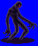
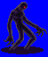
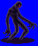
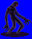

Height: Human height Weight: 0 lbs.
Habitat: Ruins, dungeon Origin: ???
Meaning: English word "shadow"
A kind of undead creature that takes the form of a lingering shadow of a dead human. It grows more powerful as time elapses after the person's death. At one time, it was thought shadows inhabited a seperate world and were able to project themselves onto this world, thus creating the benign shadows we know. In RPGs, shadows ambush and drain the life force of those who would dare enter their domain.